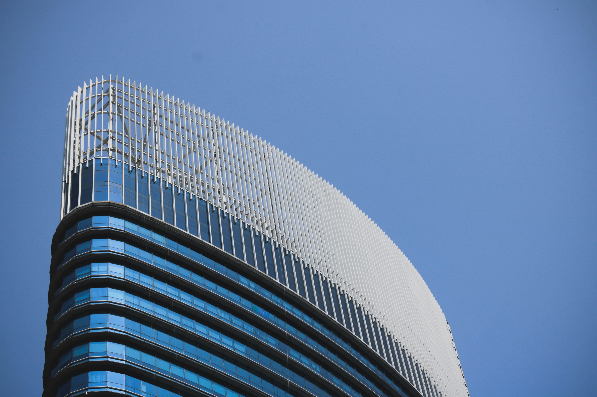

Save The Oceanについて
組織概要
| 名称 : | 特定非営利活動法人Save The Ocean |
|---|---|
| 認証年月日 : | 令和5年1月1日 |
| 令和6年1月1日 認証変更 | |
| 事務所所在地 : | 〒111-1111 |
| サンプル県サンプル市サンプル区1-11-11 | |
| TEL 06-1111-1111 | |
| FAX 06-1111-1111 | |
| MAIL info@savetheocean.co.jp | |
| 目的 : | 海や湖川に投棄されたプラスチックごみや生活ごみの清掃活動を以て海洋・自然環境の保全及び改善を図るための事業、また汚染や環境変化により減少する水中生物保護と再生、及び研究活動を行う事業、それら事業内容に対する社会の理解を深める活動を行うことを目的とする。 |
| 事業報告書 : | 閲覧はこちら |